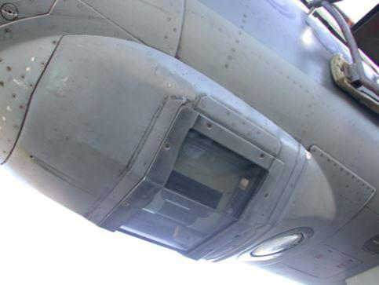
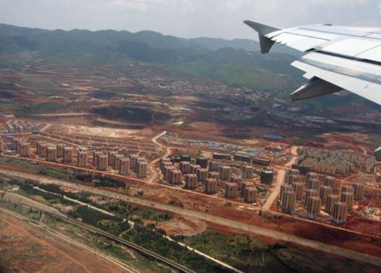
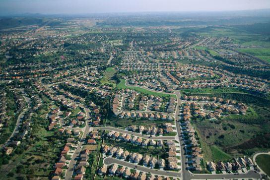
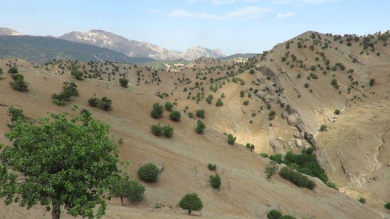
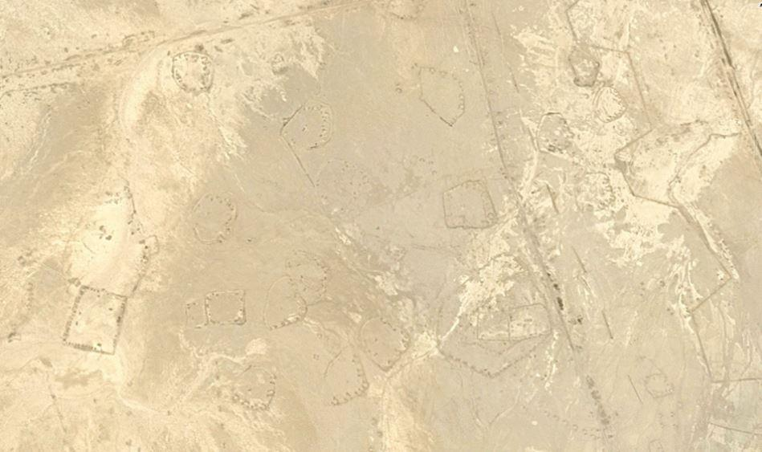
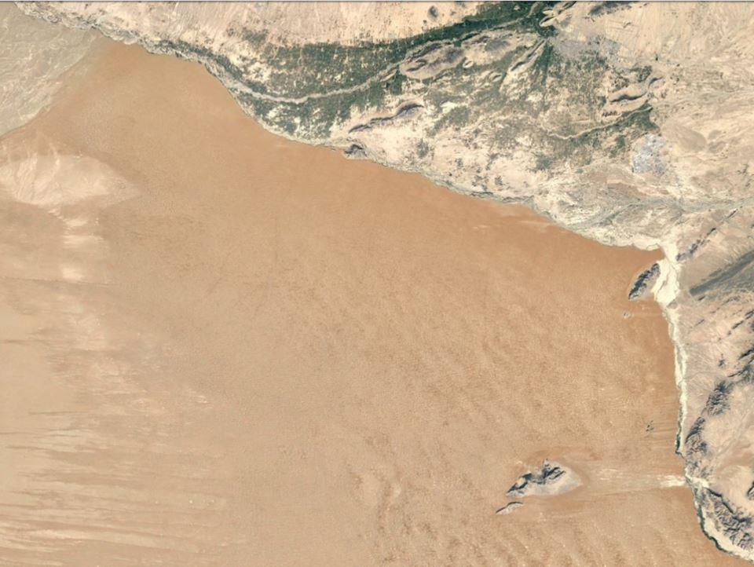
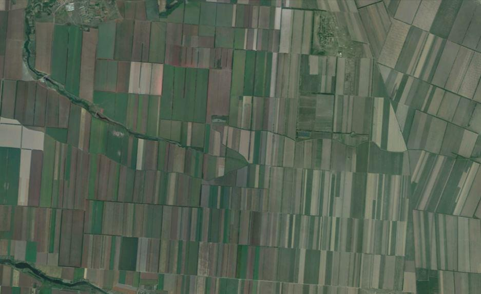
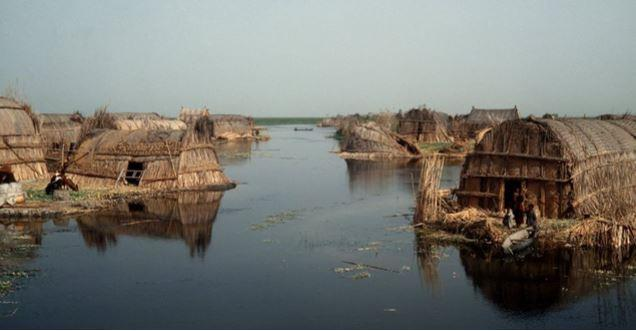

De plus de quarante ans passés à survoler le monde, quelles images reste-il ?
J’ai voulu écrire ces quelques lignes pour faire partager, non pas la beauté d’un coucher de soleil ou la forme d’un nuage comme on le fait généralement, mais plutôt pour réfléchir à la terre des hommes. À l’heure où un jeune cosmonaute français publie des photos prises de l’espace, accompagnées de commentaires de béotien … je me demande parfois si je suis bien le seul à trouver de l’intérêt à ces observations dans les différents cockpits que j’ai pratiqués, et j’ai toujours peur de donner l’impression de faire du tourisme.
 Omera 11J’ai eu la chance d’être pilote de reconnaissance il y a plus de trente ans. Nous volions très bas, très vite, et devions ramener les photos des objectifs… tout en étant capables d’expliquer au retour ce que nous avions vu. C’était tout simplement passionnant : le goût que j’avais pour les fortifications, les véhicules militaires, les terrains d’aviations (bref, ce qui faisait le métier) se complétait de notions d’urbanisme, d’un intérêt pour les espaces naturels et les problématiques d’environnement, ce qui m’aida bien pendant toutes ces années.
Désormais pilote de long-courrier, j’ai continué à regarder vers le bas, trouvant assez peu d’intérêt à la contemplation de masses de vapeur d’eau ou d’instruments de cockpits devenus immobiles…
Après avoir parcouru et appris la France pendant ces années sous les cocardes, à 150 m d’altitude et plus de 800 km/h, et n’ayant connu que quelques opérations en Afrique et au Moyen-Orient, c’est avec plaisir que je me suis donc reconverti dans l’aviation civile, en Europe d’abord, puis dans une grande compagnie qui m’a donné la chance, cette fois, de réellement parcourir le monde. Notons, pour ne pas faire prétentieux, que tout ceci est accessible aussi au passager, pourvu qu’il se soit arrangé une place fenêtre, dont il n’aura pas fermé le volet bien qu’y étant parfois contraint … et qu’il sache regarder dehors en s’écartant de ses écrans tentateurs (oui, on dit souvent qu’il n’y a rien à voir)
On sera pour commencer fasciné, voire effrayé, par la taille des grandes villes du monde (Téhéran, Istanbul, Shanghai…) On peut trouver ça beau, mais pensons quand même que cette expansion s’est produite dans les quarante dernières années – qu’en sera-t-il dans quarante ans ? Quelqu’un y pense-t-il ? Même les Américains ont fini par comprendre que leur espace n’était pas infini ; ils cherchent désormais à limiter ce qu’ils appellent le « sprawl » – l’étalement des villes. Se déplacer y devient un cauchemar quotidien, comme la logistique et, une fois que tout aura été recouvert, d’où viendront les produits alimentaires, pour commencer ? D’autant plus que depuis des siècles, les meilleures terres maraîchères se trouvaient à la périphérie immédiate, comme à Paris où il suffit maintenant de creuser sous le béton pour le réaliser…

Kunming
L’aéroport de Roissy fut ainsi plaqué sur une région au nord de Paris qui s’appelait le « pays de France », tout simplement (Tremblay-en-France, Châtenay-en-France..), et dont on apprenait que, jadis, la couche de terre arable était une des plus épaisses du pays… Voilà ce qu’on a recouvert ! Décideurs et planificateurs devraient passer du temps à orbiter à 500 mètres autour de leurs cités… Et, quand c’est la Chine que l’on survole, ce bétonnage devient effrayant (ville de Kunming par exemple).
Beijing
Continuons à parler des villes. Pour celles d’Afrique du Sud ou de l’ancienne Rhodésie, de jour, l’étude de la végétation permet de bien distinguer les quartiers, disons-le « blancs », des banlieues noires. Pourquoi planter des arbres d’ornement qu’on ne peut pas manger ? Cette dichotomie se retrouve de façon anecdotique en France. Ainsi, regardez la différence entre Arcachon et sa voisine plus populaire, La Teste...
En Afrique du Sud toujours mais, cette fois de nuit, on distinguera bien les villes blanches, avec leurs rues éclairées normalement et d’énormes lumières à intervalles réguliers en périphérie : ce sont les lampadaires géants de terrains de foot, que le pouvoir de jadis avait fait installer car, les éclairages étant protégés par leur hauteur, les insurgés ne pouvaient pas plonger les rues dans l’obscurité, et ce dispositif perdure, malgré l’inconfort qu’il procure à tout le quartier de par sa trop grande intensité lumineuse. Les banlieues noires, elles, sont reconnaissables aux centaines de petits lumignons qui s’accrochent aux collines. Ce sont les bidonvilles plus récents, ceux des « informal settlements » – vous savez ces gens qui viennent un beau jour s’installer dans vos champs et qui n’en repartent plus, et contre qui vous ne pouvez-vous opposer puisque le gouvernement n’est plus de votre côté (un peu comme en France où on fait désormais la promotion de l’envahissement…) !
Une fois passée la frontière du Mozambique et la masse sombre du gigantesque parc Krüger, l’obscurité subsiste tout le long du pays, comme dans l’est de la Zambie ou le sud de la Tanzanie, une des zones les plus désertes d’Afrique. Seuls d’immenses feux de brousse qui brulent des jours entiers font croire à des villages – mais la couleur orange ne trompe pas, comme celle du halo de fumée. Désolantes pratiques agricoles, qui transforment inexorablement des forêts en déserts, une vérité niée par de pseudos-écologistes qui seraient bien incapables de déchiffrer un paysage, comme de distinguer un acacia d’un manguier. On rencontrera aussi ces gigantesques nuages d’incendie, à certaines périodes, en Californie comme en Europe du Sud et, là aussi l’œil de quelqu’un qui a grandi en Corse permettra hélas de les identifier de loin, vérité souvent niée (et pourquoi ?) par ceux qui n’y verront que des nuages (légèrement bruns quand même ?) Turbulences et odeurs de fumée dans le cockpit seront pourtant ressenties à des milliers de mètres d’altitude.

Montagnes de Zagros
Continuons avec ce sujet. Le Moyen-Orient qui eut à subir les invasions mongoles et turques, qui incendièrent à tout va (peuples de bergers, de cavaliers nomades des steppes qui avaient besoin d’espace pour leurs tactiques de combat) offre encore, si l’on est attentif, quelques belles forêts reliques en altitude, en général tristement privées de leur sous-bois par un pâturage excessif, et donc condamnées à terme (même phénomène en Corse, une illusion de forêt). On ne peut cependant s’empêcher de contempler ces immenses monts Zagros de l’ouest de l’Iran, apparemment couverts d’arbres quoique parsemés, enneigés en hiver (donc il y a de l’eau), et où subsistent ours et léopards… Et, parlons du Samdi Dag de l’extrême Sud-est de la Turquie (3811 mètres quand même !), zone interdite de survol mais aussi d’alpinisme, insurrection kurde oblige…. Et là, ce sont cette fois les lumières si brillantes et si isolées des zones kurdes la nuit en Turquie qui intriguent…Des villages ? Peut-être, mais surtout des postes militaires en zone hostile, où l’armée turque se retranche une fois la nuit tombée et allume les projecteurs…
Istamboul
Pareillement, si l’est du Tchad est une des régions les plus sombres du globe, de par sa misère et sa faible population, en altitude, on aura la surprise d’un petit mais intense carré de lumière, seul dans le noir. Il s’agit du poste de l’ONU de la région de Biltine, terriblement isolé avec des Irlandais et des Lithuaniens qui se rassurent ainsi (mettez-vous à leur place !)
Il reste encore de belles et vastes forêts au Laos, au nord-ouest du Vietnam, en Birmanie…
Mais, plus au sud, c’est un scintillement de lumière que la nuit révèle : villes étendues certes, mais l’omniprésence de la mobylette y autorise les habitations dispersées, sans plus aucun plan d’urbanisme, ni ce maillage de villages auquel nous sommes habitués dans nos pays. Les routes deviennent ainsi, comme en Ouganda, une succession ininterrompue d’échoppes et de misérables cahutes, une immense banlieue à travers laquelle on roule péniblement pendant des heures sans pouvoir se raccrocher à des repères, sans avoir l’impression d’être passé d’une ville à une autre…

Désert irakien
Cela se voit bien, de nuit au-dessus de la Thaïlande ou du Vietnam du Sud (le Cambodge est par contre un vaste trou noir), où cloisonnement des espaces sauvages est partout un grave inconvénient car il rend impossible le franchissement des routes par les grands animaux, surtout si elles sont éclairées la nuit (comme en Belgique, aux Émirats, pas en France heureusement encore) Une zone – disons une forêt, une montagne – qui, de par sa superficie allait théoriquement permettre à une population animale de se maintenir au-dessus de la taille critique, verra celle-ci fortement diminuer, une fois fragmentée en deux. Ainsi le léopard a t-il probablement disparu du nord d’Oman, la chaîne aride des montagnes côtières ayant été divisée en parcelles étanches par des autoroutes illuminées comme en plein jour, alors qu’une route plongée dans l’obscurité permettrait aux animaux de tenter leur chance pour passer de l’autre côté.
Tout cela saute aux yeux de nuit comme de jour en survolant les zones concernées – mais la France n’est pas pour autant épargnée, avec ses TGV et multiples autoroutes, barrières étanches pour lesquelles la survie de la faune de la région ne faisait pas partie du cahier des charges : forêt de Fontainebleau, marais Poitevin, massifs du Vercors… Il est tellement plus facile de couper à travers ; cela fait moins d’expropriations !
Passons à quelques considérations sur les déserts :
Celui du Soudan est noir … de chez noir, comme on dit, mais dès la mer Rouge passée, c’est l’Arabie Saoudite, parfois éclairée comme une campagne française : c’est que, malgré le peu d’habitants, il faut bien subventionner tout ça à coup d’argent du pétrole afin garder la population satisfaite ! Le désert saoudien, je l’ai vu, plus loin, après une chute de pluie, couvert pour quelques jours de centaines de lacs entre les dunes. Des lacs, d’une eau tellement claire et limpide, que je me demandais quelle en était la profondeur réelle, et à quoi cela pouvait bien ressembler vu depuis le sol (car là cette fois il n’y avait personne).

Kandahar
Vu aussi, le désert du sud de l’Afghanistan, avec la rivière Helmand qui descend de l’Hindou Kusch pour trancher cette mer de sable comme une lame, la séparant des cultures irriguées de l’autre côté. Les déserts glacés du Turkménistan, cette steppe kalmouke à l’est de Volgograd avec les traces des troupeaux qui convergent vers les points d’eau – et les zones de dunes de sable dans la campagne à l’ouest de cette ville (faillite de projets agricoles, changement climatique, d’autres raisons ?). Les immenses champs quadrillés de la région de Stavropol donnent une idée de l’agriculture collectiviste, et de l’austérité du secteur…

Stavropolr
De toute façon le sud-est de la Russie est bien aride, les rares forêts y sont souffreteuses (des pins de reboisement) et ce n’est qu’à l’approche de Moscou que le pays verdit réellement, pour ensuite fournir à l’œil jusqu’à Saint-Pétersbourg de réconfortantes et immenses forêts, bien vaillantes celles-là (des pays de partisans !)
Vous voulez des lumières ? Décollez la nuit de Bangkok face au Sud et, au lieu de la mer obscure que vous attendez à cette heure-là, ce seront des centaines de lueurs qui vous feront douter de votre positionnement, jusqu’à ce que vous réalisiez qu’il s’agit de douzaines de chalutiers pêchant le calamar (« au lamparo », comme on dit dans le Midi), et c’est comme ça jusqu’en Indonésie.
La mémoire de ce spectacle vous fera immédiatement comprendre que, lors de la disparition du MH 370, il n’y avait pas lieu de le chercher dans ce golfe du Siam si fréquenté, où il aurait été impossible qu’un Boeing 777 tombe en mer sans que quelque embarcation ne le voie !
Finissons par les guerres :
Elles ont souvent laissé leurs traces, telles que les champs de bataille de l’est irakien, là où l’artillerie de Saddam Hussein éparpilla les vagues d’adolescents iraniens fanatisés grâce aux 155mm français à tir rapide… Dans ce pays qui n’est qu’un océan de boue plus ou moins séchée, ce ne sont que digues, levées de terre, merlons, fossés antichars, dont la trace sera visible pour des siècles. Le moindre escadron en bivouac commençait par s’enterrer avec les bulldozers généreusement fournis. L’ennemi était certes iranien mais c’est toute la région qui n’était pas sûre.
Et justement, comme ces fameux « arabes des marais », avec leurs habitations de roseaux et leur Jardin d’Éden, avaient eu le mauvais goût de se révolter, Saddam Hussein fit drainer la majeure partie de leur habitat qui était si difficile à contrôler. La guerre avec l’Iran n’aida en rien… Terrible catastrophe écologique, que la fin des hostilités a permis de corriger par une progressive remise en eau … avant que n’arrive un autre désastre : la faiblesse du nouveau pouvoir irakien l’empêchant de s’opposer aux Turcs et à leurs nouveaux barrages pharaoniques.

Arabes des marais
C’est à un asséchement et, pire, une salinisation de cette région par la remontée de l’eau du Golfe que l’on assiste désormais, pour le plus grand malheur des habitants. Tout cela s’observait déjà dans les années 1990 à partir d’autres avions et, aujourd’hui, des cockpits des rares compagnies qui survolent la région.
Continuons sur les sites militaires : en Europe, au Moyen-Orient, bases aériennes et sites de missiles ne demandent qu’à être découverts et identifiés, qu’ils soient en service ou alors abandonnés comme les anciennes pistes bétonnés des premiers avions à réaction allemands dans le nord de la France, dont les taxiways se perdent dans les villages voisins – il fallait bien se cacher sur la fin –, mais aussi comme les dizaines de terrains alliés en Angleterre, dont on aura toujours la vue sur deux ou trois d’entre eux en survolant le centre et l’est de ce pays, et le vieux béton qui affleure des champs ne trompera pas un œil exercé ! Les forts de la ligne Maginot, eux, se reconnaissent d’en haut à la zone de broussailles non cultivée qui les recouvre d’une couleur différente des champs cultivés alentour.
On pourrait poursuivre longtemps, parler de ces tirs de missiles Topol auxquels on assiste parfois la nuit près de Volgograd* si on a la chance de passer juste à ce moment, de ces immenses bidonvilles de Khartoum et autres, avec ce qu’ils impliquent désormais pour l’Europe soumise, de ce volcan de Barren Island dans la mer d’Andaman dont personne ne relève les éruptions …. Et pourquoi en Turquie orientale le lac du cratère de Nemrut est-il manifestement plus haut que le lac de Van juste à côté, et d’où en vient son eau si bleue alors qu’il n’y a pas de montagne au-dessus ? Et que sont ces étranges maillages de clairières dans les forêts des Etats-Unis, alors qu’il est si facile d’y reconnaître des forages de gaz naturel, abandonnés dès qu’ils ne donnent plus, et dont le caractère dévastateur pour l’environnement apparait ici en évidence ….
La Terre est tellement vaste que plus d’un livre serait nécessaire, et pas ce petit article. Nous espérons juste avoir donné au lecteur quelques pistes d’observations pour ses prochains vols…
Partager cette page